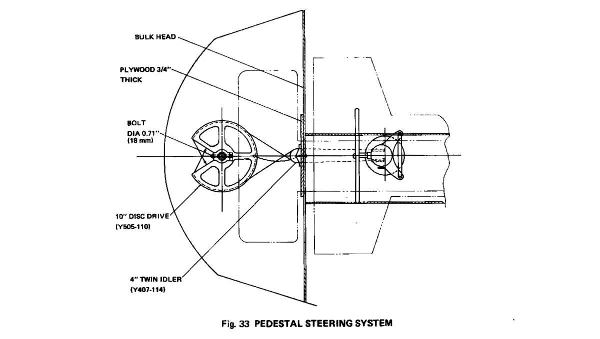
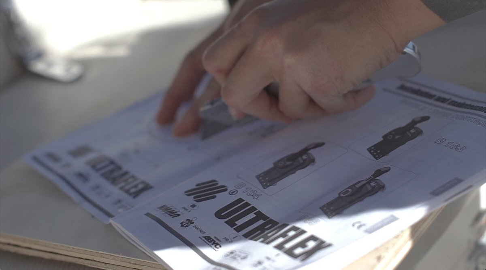

wheel to tiller conversion
2018.02.10
Whangarei, New Zealand
Click below dates for more recent updates:
A tiller is a steering alternative to a wheel. Instead of a circular wheel, you have a bar, usually made of wood, that is attached to a rudder post, which in turn, is attached to the rudder. If you move the tiller to the left, the rudder moves to the right, and so with this you direct the water one way and then another. Driving with a tiller, gives you a more direct connection to the rudder. Devine & I like to use the fixie analogy, with fixed-wheel bikes you have less components between the pedals and the wheels, it's the same with a tiller and rudder.
A project we were supposed to do while in Mexico, that was then only realized a year later.
The wheel, that we used to steer the boat, is kept there by a big post that is bolted through the deck. Removing the wheel, means you have to remove what is supporting it, and all of the connections leading inside the boat, steering SS cables that lead to a big quadrant (a metal wheel that is attached to the rudder post). A turn of the wheel, pulls on one of the cables, which turns the quadrant and the rudder.
Removing the wheel pedestal, Devine said to me, was easy enough. Devine had to cut through the control cables (when we have the engine running, it's what controls the engine speed), because we couldn't remove some SS screws that had merged with a piece of aluminium (happens, SS and aluminum will corrode over time) — no matter, the control cables had to be replaced too anyway. The cockpit now had a large gaping hole in the floor. I went below and removed the wires connected to the quadrant, cutting away at them with a hacksaw in the dark, in a tiny cramped space.
We glassed all of the holes. Just in time too, because the rain in Whangarei always comes.
We had a tiller for Pino already, that we'd bought at a scrapyard in Sonoma, California (during our run down the west coast of the United States). The tiller head fit with ours well enough, but ideally, we'd have to make a new one so that the tiller can be made to go lower, currently, it stands quite high, but it doesn't really change much for driving.

Switching from wheel to tiller, meant we had to install both a new throttle lever, and a compass. Both of these things were part of the pedestal with the wheel before.
We replaced our old control cables too, which had split and rusted in part, and bought new and longer ones. We routed them to their new place on the port side, in front of the aft locker. Peeking at the place we would have to install the throttle from inside boat, after opening the wall up, we discovered there wasn't enough room to install it there. There wasn't enough height for the cables to bend at a good angle, if the angle is too extreme it can damage them overtime.
We decided then, to install it on the starboard side, access was easier, we could get at it from inside a locker.
The two-lever throttle we bought, although very shiny, turned out to be a great big piece of junk. It came with no installation guide, bore no name, no way to find information about it online. We made a hole for it, and installed it, but the lever was super wobbly, we couldn't imagine going to sea with this.
We returned it to All Marine, saying just this, that it was a giant piece of crap, which they confirmed, and they let us exchange it for another, more expensive, and better model. I guess they knew it was shit? Why keep it in stock then?
We bought a single-lever throttle, a Ultraflex B85 side mount. The issue now though, was that we'd already made a big hole, and this one needed an even bigger hole. We were able to drill a good hole, a bit offset, that lined with the outer edge of the old one. Doing this wasn't easy, every project requires a different sized hole, and buying a new bit is expensive, and kind of ridiculous — how often will we be making holes this size in our boat? Not too often I hope.
We found a used tools shop in Whangarei up Walton street, and were able to borrow a proper sized bit there — yea, borrow! They suggested it. We installed the throttle lever, and its backing, and routed the acceleration cables through Pino's insides and over to the engine room, with much swearing and difficulty.
Pino could go forward again! YAY. I did make a mistake though, of not securing one of the two control cables on the engine well enough, the effect was that as soon as the engine was on, we'd go forward. The cable came off as we were going forward, and stayed stuck in that position. When we set the anchor, we usually rev the engine to go back to make sure its set, if we tried to go backward we'd go forward instead, but didn't notice it the first time, blaming it on the wind or current in the bay where we happened to be.
It's not really a big deal, it was windy out, and that alone helped to set our anchor. We fixed it after the second time we tried to anchor, clearly noticing then, that we were moving forward even if the throttle was pointing backward, even in neutral. It was just a matter of reconnecting the cables, and to ensure that the bolts were tight.
Compass and anchor
We still had more holes to make after this, for our compass, on the port side bulkhead (a dividing wall or barrier between separate compartments inside a ship) on the cabin front. We ordered one online, a small white Ritchie bulkhead compass.
The bit we had before was too big, we returned it to the used tool places, our boat neighbor had a few, but not exactly the right size. We borrowed one, that was very, very near our desired diameter, and figured we could sand the rest.
That turned into a 2-hour long sanding game, sand sand sand, try the compass, nope, sand sand sand. We did fit it eventually, and connected it inside. We realized then that the damned thing didn't come with an LED, we'd looked at so many models, and forgot to make sure it came with it.
We bought a new seat for the light to accomodate an LED and changed it right away.
During this time, our old pedestal lay on deck, we didn't know what to do with it. We considered selling it, but couldn't be bothered, we had little energy at this point. We decided to bring it to Stanley Marine, a used boat gear shop. Devine had an idea, and asked if we could exchange the pedestal and wheel, for an old 15kg Rocna we'd seen lying around the back. The owner didn't mind this, so we left Pino's old wheel there, and returned with a heavier anchor! Score!
Takeaway: Don't cheap out on important boat parts, the throttle lever we saw initially looked good at first glance, but was garbage. Spending more will not always guarantee quality, but in this case it did. The tiller we bought in Sonoma, is for a boat that has a tiller-post hole that is low on deck, it has a curved shaped, and it sized for a bigger boat than ours — we didn't realize this at the time. It still fits, and works well, but if you change your boat from wheel to tiller, mind the shape of the tiller as well as the tiller-head shape.
Throttle 250$
Control cables 130$
Compass 130$
Anchor 250$
Used tiller 90$
2024.04.19
Victoria, B.C, Canada
We spied a crack in our tiller head. The culprit? A bolt hole that was drilled too close to the edge, this paired with many years of hard sailing.
We'd like to replace it, but haven't yet found a suitable candidate because a lot of the hardware on Pino is metric. It looks like we'll have to have one fabricated. Except that it is too late this year to get the work done.
In the meantime, we sourced a length of thick-walled aluminum(imperial) piping that fits inside the rudder post (it's about 45 cm long). We drilled 4 large holes, two on each side, one to connect the pipe to the rudder head, and the other to attach the tiller. We also drilled extra holes to run a length of paracord to help support the tiller.
Instead of attaching hardware or making holes in the tiller, we used two rope loops we had on hand. A few years ago, we were really into making closed rope loops... the boat has many, and now we found a use for these ones!
Because the pipe wasn't a perfect fit inside the post, we added several bands of electric tape along its length. The bands of tape will also serve to isolate the aluminum from the stainless steel (see the effect of combining dissimilar metals).
It's a bit clunky-looking, but it's a good temporary solution. We plan to make a cap to keep water from entering the top of the pipe.